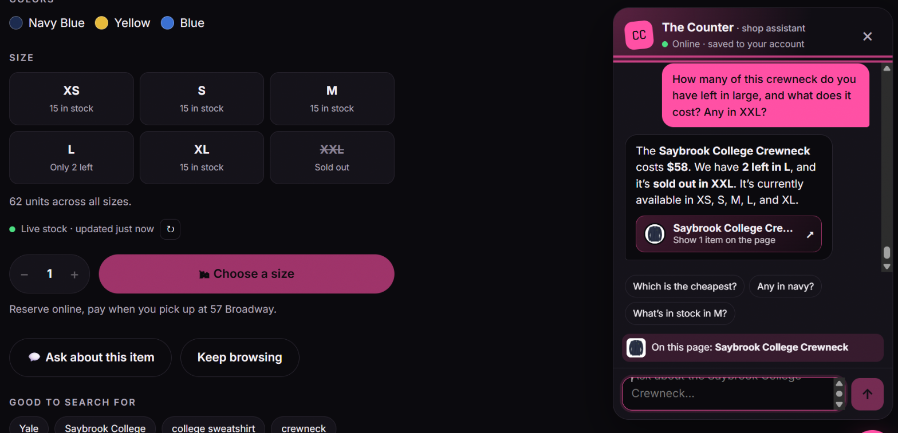
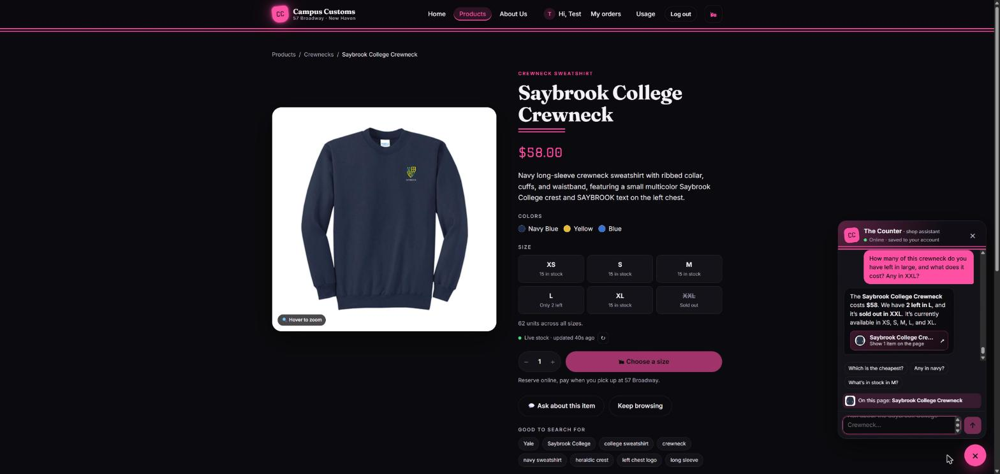
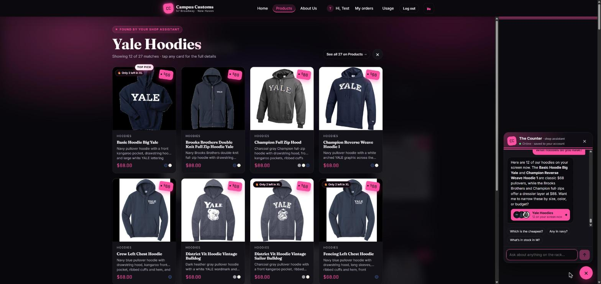
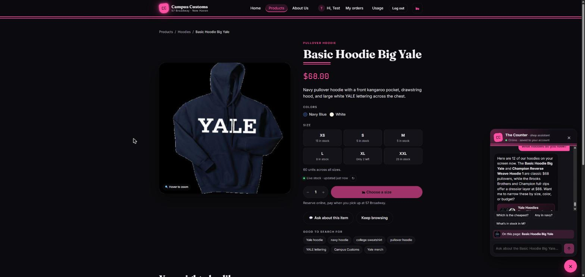
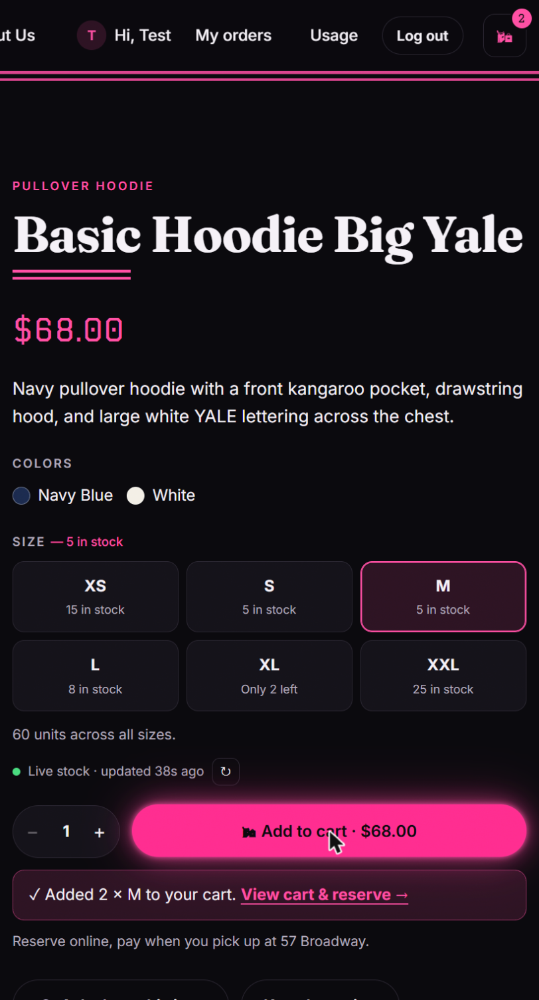
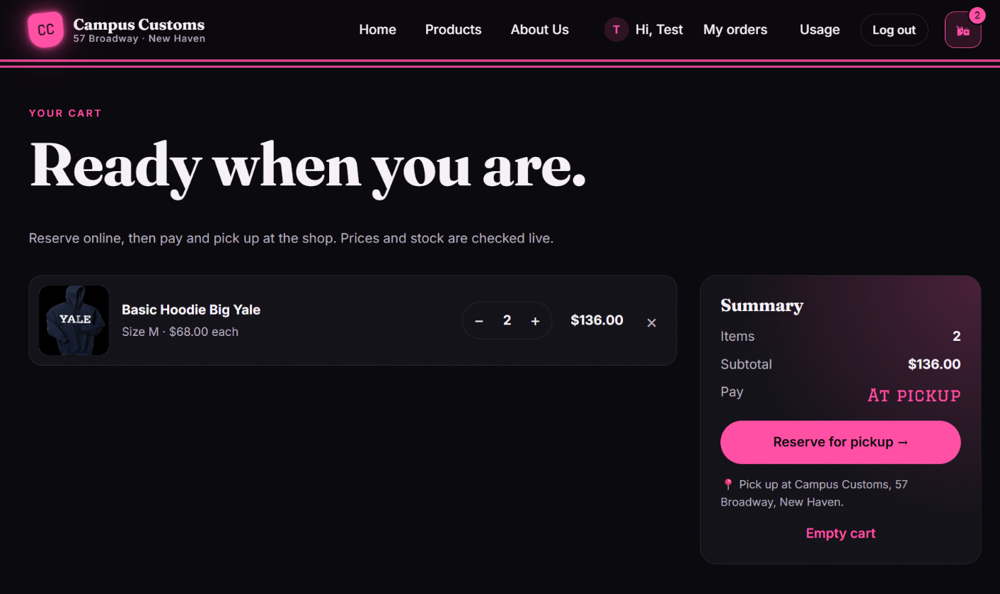
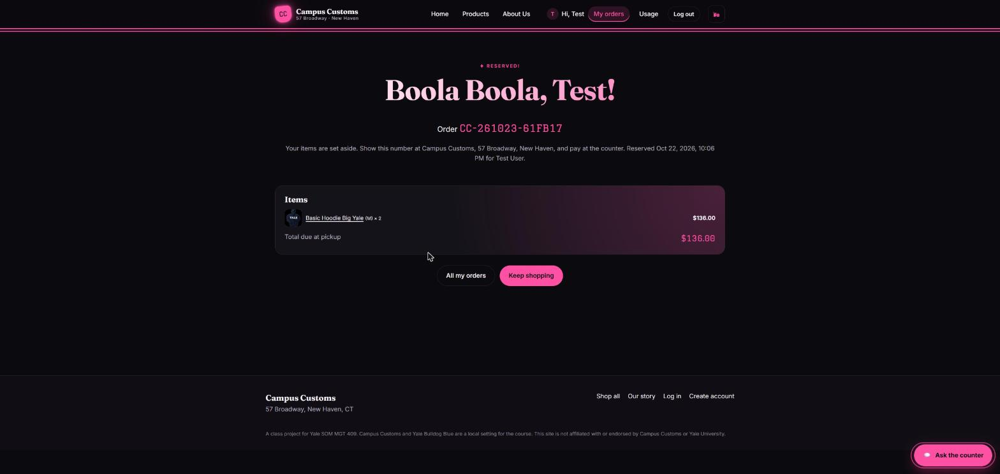

Campus Customs — live app check
The running app (React front end on localhost:5173, FastAPI + PydanticAI agent on
localhost:8000, model gpt-5.6-luna via Portkey) was tested in Chrome, logged in as the
seeded test user. Every screenshot below is from that session; each check also lists what the database
said at the time, so the numbers on screen can be compared with the source of truth.
| # | Check | What it proves | Result |
|---|---|---|---|
| 1 | Chat checks inventory & price | The assistant reads stock and price from campus_customs.db and reports them exactly, including a sold-out size. | PASS |
| 2 | Search-result cards after "What hoodies do you have?" | A category question puts real product cards on the page (separate from the chat text), and a card opens its product page. | PASS |
| 3 | Problem 9 feature: cart & reserve for pickup | Add to cart → cart re-priced live → reservation saved in the database with stock taken off. | PASS |
01Chat checks the inventory level of an item
On the Saybrook College Crewneck product page, the shopper asked: "How many of this crewneck do you have left in large, and what does it cost? Any in XXL?"


Database at the time: catalogue.price = 58.00; inventory for
saybrook-college-crewneck: XS 15 · S 15 · M 15 · L 2 · XL 15 · XXL 0.
Agent run log (agent_runs): this turn called get_product_price("saybrook-college-crewneck")
and check_stock("saybrook-college-crewneck") — 9,925 input / 221 output tokens, est. $0.0146.
02Dynamic search-result cards after a category question
On the Products page, the shopper asked the chat: "What hoodies do you have?"


Database at the time: 27 products in the Hoodies category (matches "12 of 27");
basic-hoodie-big-yale price 68.00, XL stock 2.
Agent run log: this turn called search_products(category="Hoodies", limit=12) — 10,792 input /
286 output tokens, est. $0.0164. The reply's "See all 27 on Products" link points to /products?category=Hoodies.
03Problem 9 feature: shopping cart & reserve for pickup
On the Basic Hoodie Big Yale page the shopper picked size M, quantity 2, added it to the cart, opened the cart, and reserved it for in-store pickup.





Database after reserving: orders row CC-261023-61FB17 · reserved · Test User · 2 items · $136.00;
order_items: basic-hoodie-big-yale · M · 2 · $68.00; inventory M went from
5 → 3 (stock is taken off when the order is placed).
Clean-up: after the screenshots, this test reservation was cancelled and the 2 units returned, so the live
catalogue matches the seed data again (M = 5).